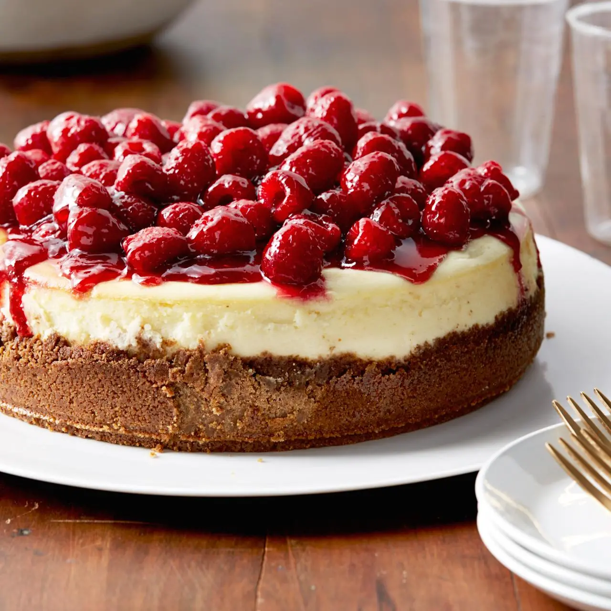
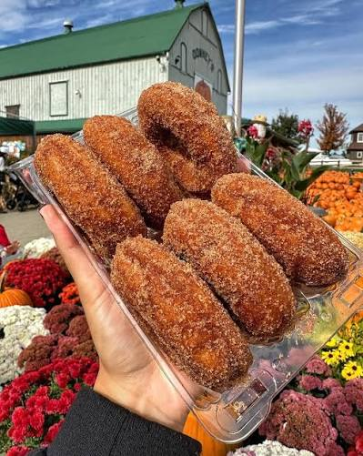
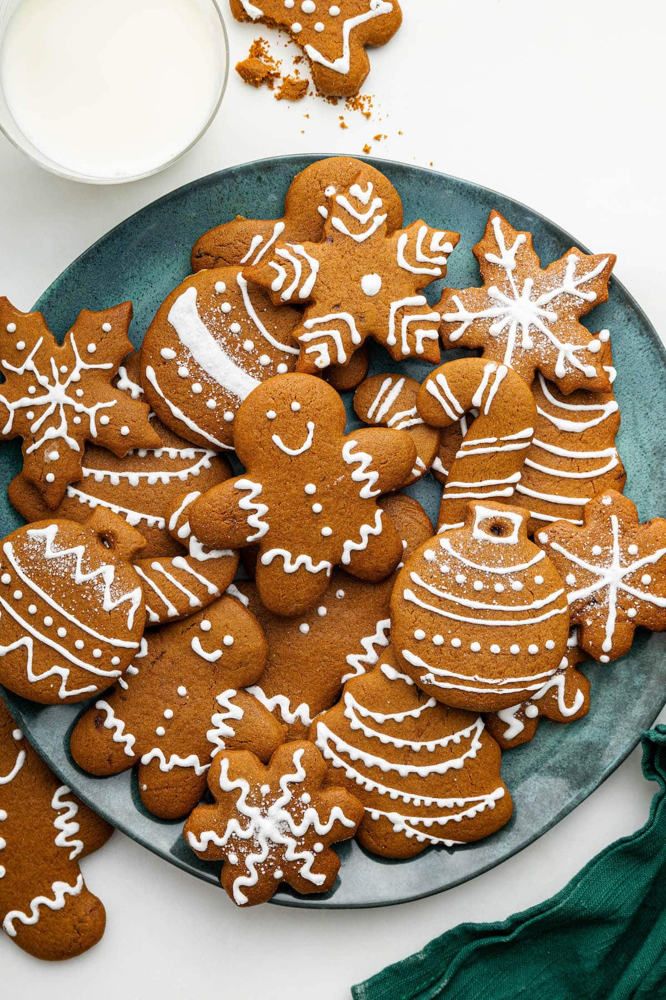

Cheesecake

My everyday go to dessert is a nice Strawberry or Raspberry Cheesecake. Even in terms of ice cream flavour!

My everyday go to dessert is a nice Strawberry or Raspberry Cheesecake. Even in terms of ice cream flavour!

I love getting them from Downey's in the fall! The cinnnamon sugar coating makes them delish!

These are my favorite cookies to eat during christmas time! This with a glass of cold milk is the perfect combo!